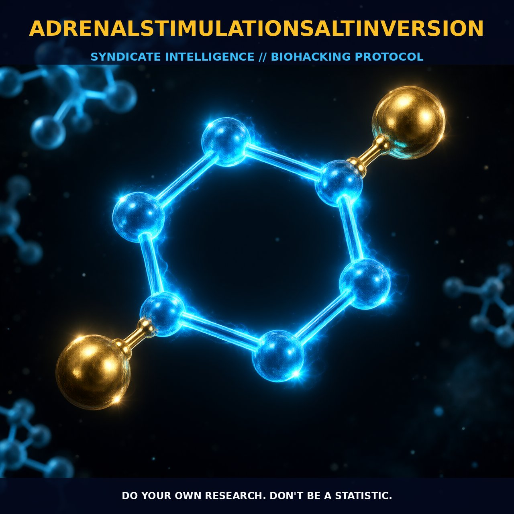

Optimizing Performance with AdrenalStimulationSaltInversion

AdrenalStimulationSaltInversion (ASSI): Optimizing Performance with Neuroendocrine Balance
AdrenalStimulationSaltInversion (ASSI) is a cutting-edge biohacking protocol that synergizes adrenal stimulation with strategic electrolyte manipulation to enhance cognitive and physical performance. The protocol leverages the intricate interplay between the adrenal glands and electrolyte balance to optimize metabolic and physiological functions.
1. The Mechanism
At the heart of ASSI lies the modulation of the hypothalamic-pituitary-adrenal (HPA) axis and the autonomic nervous system. Adrenaline and cortisol, two key stress hormones, are released in response to HPA axis activation, increasing heart rate, blood pressure, and glucose levels for enhanced physical and cognitive performance. Additionally, Semax, a compound that activates specific binding sites in the brain, plays a pivotal role in enhancing BDNF synthesis, a neurotrophic factor critical for synaptic plasticity and neuronal survival.
Electrolyte balance, particularly sodium, potassium, and calcium, is vital for nerve impulse transmission, muscle contraction, and cellular function. By carefully adjusting the intake of these electrolytes, ASSI aims to optimize their balance, thereby enhancing overall performance.
Adrenaline increases heart rate and blood pressure, while cortisol stimulates glucose release from the liver and enhances energy utilization. Semax enhances the synthesis of BDNF, crucial for synaptic plasticity and neuronal survival. These neuroendocrine and electrolyte manipulations work in concert to optimize performance.
Moreover, the interplay between sodium, potassium, and calcium ions is critical for cellular functions, including nerve impulse transmission and muscle contraction. By adjusting the intake of these electrolytes, ASSI aims to maintain optimal blood pressure, fluid balance, and neural function.
2. Biological Leverage
The biological leverage of ASSI is rooted in the modulation of the HPA axis and autonomic nervous system. Adrenal stimulation ensures that stress hormones are released in optimal amounts to support cognitive function and physical performance. Electrolyte balance, especially sodium, potassium, and calcium, is crucial for maintaining electrical potential across cell membranes, essential for nerve impulse transmission and muscle contraction.
Imbalances in these electrolytes can lead to muscle cramps, irregular heartbeats, and cognitive impairment. ASSI aims to optimize their balance, enhancing cellular function and overall health. For instance, increased sodium intake can improve fluid retention and blood pressure regulation, while potassium supplementation can enhance muscle function and nerve impulse transmission.
3. Tactical Implementation
Practical implementation of ASSI involves a careful balance between adrenal stimulation and electrolyte intake. Adrenal stimulation can be achieved through compounds like Semax, administered intranasally. Dosages typically range from 250 to 500 micrograms, adjusted based on individual response.
Salt inversion involves adjusting the intake of sodium, potassium, and calcium to optimize hydration and electrolyte balance. A typical approach might involve increasing sodium intake to 3 to 5 grams per day, maintaining a moderate intake of potassium around 2 to 4 grams per day, and ensuring adequate calcium intake of 1000 to 1200 milligrams daily.
Timing is critical, with adrenal stimulation ideally performed in the morning to support cognitive function and physical performance throughout the day. Salt inversion can be adjusted based on daily activities and hydration needs, with higher sodium intake beneficial during intense physical activity and balanced intake suitable for cognitive function maintenance.
Monitoring heart rate variability (HRV) can provide insights into the effectiveness of the protocol, with lower HRV indicating optimal adrenal function and balanced electrolyte levels.
Prostar Life Hack
Start your day with a dose of Semax for enhanced cognitive function and physical performance. Follow with a balanced intake of sodium and potassium to optimize electrolyte balance and maintain fluid hydration. Adjust according to your daily activities and monitor HRV for optimal results.
[ AUTHOR: LEAD TECHNICAL RESEARCHER ]